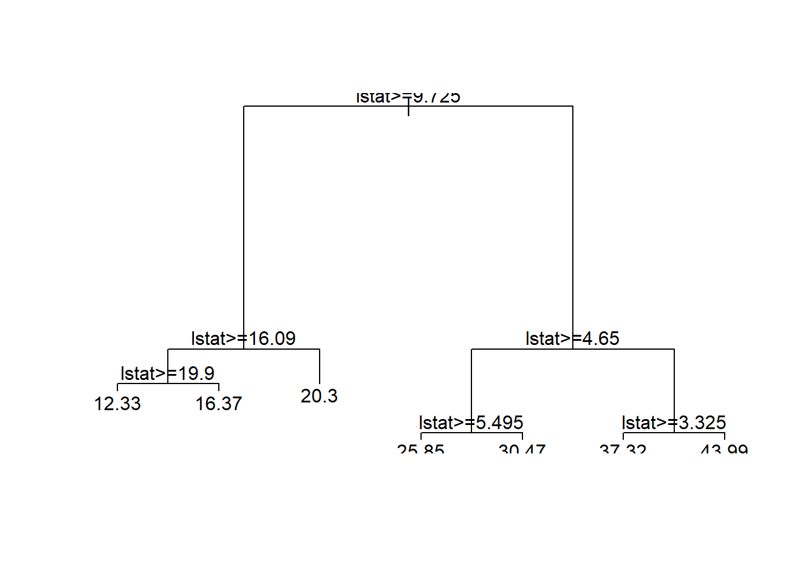
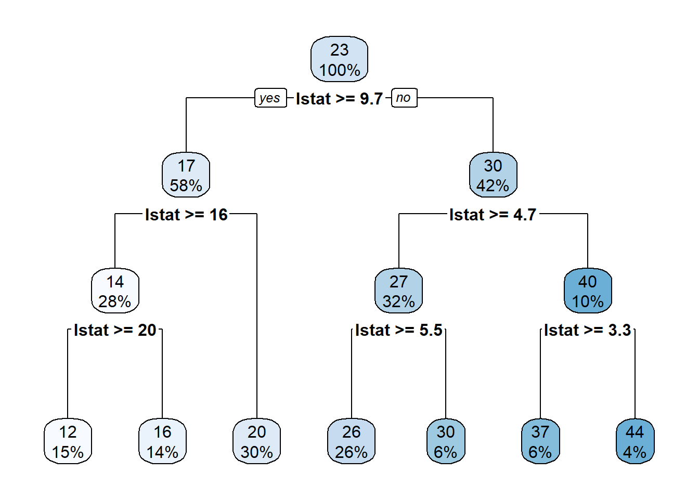
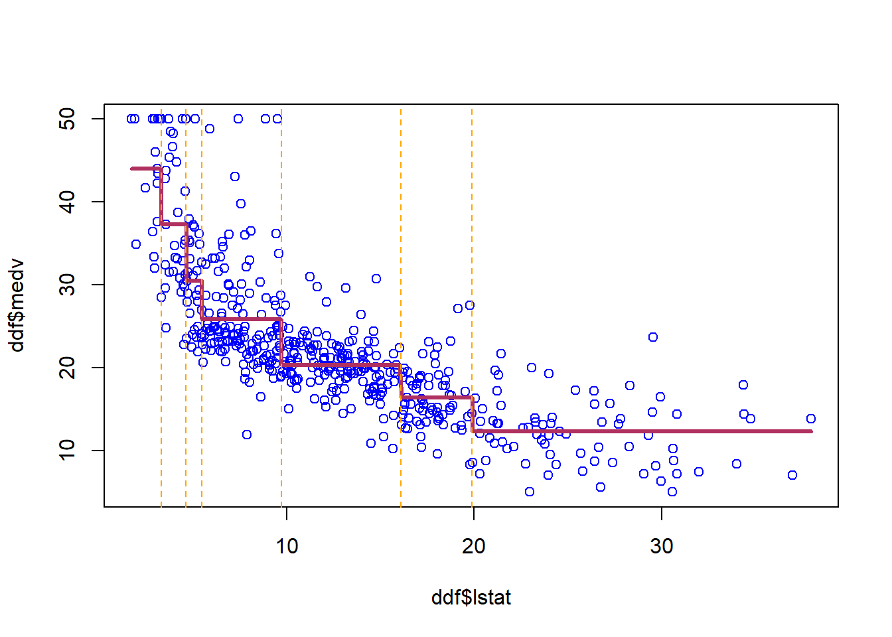

The idea of trees in statistical learning has similarity with decision trees models. Trees and its extensions have been used widely for modeling the prediction of outcome variables. Let’s start with reviewing the advantages and disadvantages of this method:
Benefits:
Very good in capturing the interactions between the features of a models and non-linearity associations
performs very well in handling categorical variables, with nice interpretation of the results
relatively faster than other machine learning algorithms
does not require scaling x variables/features.
Disadvantage:
Simple tree models do not lead to the best out-of-sample predictive.
However, if we grow a good forest and bag/boost the models to combine the fits from different tree models, we can improve the prediction power.
5.1 Regression Trees
It is much easier to explain the tree models using an example. Let’s start with the Boston housing data that we used before in \(kNN\) section. Similarly, I want to predict median housing price in a neighborhood, \({\tt medv}\), using the ratio of low state households, \({\tt lstat}\).
library(MASS) attach(Boston)n =nrow(Boston)ddf =data.frame(lstat,medv)# Sort the data hereoo=order(ddf$lstat)ddf = ddf[oo,]library(rpart)m_tree=rpart(medv~lstat,data=ddf)#plot the estimated treesummary(m_tree)
Call:
rpart(formula = medv ~ lstat, data = ddf)
n= 506
CP nsplit rel error xerror xstd
1 0.44236500 0 1.0000000 1.0039181 0.08305220
2 0.15283400 1 0.5576350 0.5973316 0.05238544
3 0.06275014 2 0.4048010 0.4421396 0.04395568
4 0.01374053 3 0.3420509 0.3947080 0.04137455
5 0.01200979 4 0.3283103 0.3810984 0.04077176
6 0.01159492 5 0.3163005 0.3763524 0.03962160
7 0.01000000 6 0.3047056 0.3719473 0.03959767
Variable importance
lstat
100
Node number 1: 506 observations, complexity param=0.442365
mean=22.53281, MSE=84.41956
left son=2 (294 obs) right son=3 (212 obs)
Primary splits:
lstat < 9.725 to the right, improve=0.442365, (0 missing)
Node number 2: 294 observations, complexity param=0.06275014
mean=17.34354, MSE=23.83089
left son=4 (144 obs) right son=5 (150 obs)
Primary splits:
lstat < 16.085 to the right, improve=0.3825785, (0 missing)
Node number 3: 212 observations, complexity param=0.152834
mean=29.72925, MSE=79.31047
left son=6 (162 obs) right son=7 (50 obs)
Primary splits:
lstat < 4.65 to the right, improve=0.3882819, (0 missing)
Node number 4: 144 observations, complexity param=0.01374053
mean=14.26181, MSE=18.74458
left son=8 (75 obs) right son=9 (69 obs)
Primary splits:
lstat < 19.9 to the right, improve=0.2174498, (0 missing)
Node number 5: 150 observations
mean=20.302, MSE=10.84406
Node number 6: 162 observations, complexity param=0.01159492
mean=26.6463, MSE=42.74335
left son=12 (134 obs) right son=13 (28 obs)
Primary splits:
lstat < 5.495 to the right, improve=0.07152825, (0 missing)
Node number 7: 50 observations, complexity param=0.01200979
mean=39.718, MSE=67.21788
left son=14 (32 obs) right son=15 (18 obs)
Primary splits:
lstat < 3.325 to the right, improve=0.1526421, (0 missing)
Node number 8: 75 observations
mean=12.32533, MSE=16.18776
Node number 9: 69 observations
mean=16.36667, MSE=13.01729
Node number 12: 134 observations
mean=25.84701, MSE=40.14324
Node number 13: 28 observations
mean=30.47143, MSE=37.49776
Node number 14: 32 observations
mean=37.31562, MSE=65.92382
Node number 15: 18 observations
mean=43.98889, MSE=41.01765
summary(ddf$medv)
Min. 1st Qu. Median Mean 3rd Qu. Max.
5.00 17.02 21.20 22.53 25.00 50.00
plot(m_tree)text(m_tree)

But, this plot does not often look good. Indeed, it usually is a mess! To plot a nice tree, I suggest using \({\tt rpart.plot}\) package.
library(rpart.plot)rpart.plot(m_tree)

At each interior node, there is decision rule, \(x>c\). If \(x>c\), you should follow the branch on the left. This continues until you reach a bottom/terminal node, which also is known as the leaf of the tree.
plot(ddf$lstat,ddf$medv, col='blue')lines(ddf$lstat,predict(m_tree,ddf),col='maroon',lwd=3)for (i in m_tree$splits[,4] ){abline(v=i, col="orange",lty=2)}

The set of bottom nodes gives us a partition of the predictor \(x\) space into disjoint regions. At right, the vertical lines display the partition. With just one x, this is just a set of intervals.
Within each region (interval) we compute the average of the \(y\) values for the subset of training data in the region. This gives us the step function which is our \(\hat{f}\). The \(\bar{y}\) values are also printed at the bottom nodes. To predict, we just use the above step function estimation of f(x).
5.2 A Tree with Two Explanatory Variables
Now, let’s estimate a tree model using two features: \(x=(lstat, dis)\) and \(y=medx\).
First, let’s take a look at scatter plot of these variables:
attach(Boston)ddf =data.frame(medv,rm,nox,lstat, dis)# Sort the data hereoo=order(ddf$lstat)ddf = ddf[oo,]library(ggplot2)ggplot(ddf, aes(lstat, dis, colour = medv)) +geom_point()
Regression tree:
tree(formula = medv ~ lstat + dis, data = ddf)
Number of terminal nodes: 9
Residual mean deviance: 20.78 = 10330 / 497
Distribution of residuals:
Min. 1st Qu. Median Mean 3rd Qu. Max.
-14.780 -2.713 -0.302 0.000 2.298 15.620
5.3 What is the loss problem and optimization question in tree algorithm?
As shown above, we want to split the feature space, i.e. \(X=\{x_1, x_2, \dots, x_k\}\), to smaller rectangular, or boxes. If we find a splitting pattern which has the lowest prediction error for the training data, then we can predict the associated outcome with the prediction feature set \(X_p\) by finding to which box this set belongs. Roughly, we can think about about tree algorithm like a \(kNN\) algorithm in which \(k\) is dynamic and can change according to the changes in the data.
This loss has a straightforward intuition: we want to find \(R_j\)s to minimize the sum of the squared deviation of observations from the mean response within each box. In theory, we can define infinite number of boxes, and we need to evaluate the squared errors of each set of boxes to see which one is minimized. This is computationally very intensive and almost impossible.
To solve this problem, a recursive partitioning top-down approach is used to find the optimal boxes:
Scan each feature/predictor in the data to find the one for which splitting gives the best performance/prediction power, i.e. lowest error.
Now, for each split repeat the previous step, and continue this until splitting is too costly (we will discuss later what “costly” means, but just as a tip: think about bias-variance tradeoff), or reach a pre-defined tree size.
This is a greedy approach since the splitting process only focus on each step and pick the split that is associated with the best fit at the current step, rather than looking ahead and picking the split which lead to a better prediction tree in the following steps.
5.4 How to fit the data to a tree model?
To execute the above algorithm, statistical algorithms re-write the above problem as follow:
where L(T,y) is the loss of fitting outcome \(y\) with tree \(T\). Our goal always is minimizing the loss, that is small \(L\) is preferred.
However, we do not want to make the model/tree too complex. A complex model might be good in capturing all variances in the training data, but would lead to a biased prediction of in the test data. Thus, we add the number of nodes in tree T, i.e. \(|T|\), with a penalty parameter \(\alpha\) to the cost function \(C(T,y)\). For the continuous \(y\), we can use RMSE, and for categorical \(y\), we can use any of the classification measures that are discussed in the previous section.
What is the best \(\alpha\)? if we pick a big \(\alpha\), then the penalty for having a big and complex tree is large. Thus, the optimization problem return a small tree which can lead to a large \(L\) on the training data. On the other hand, for a small \(\alpha\), we allow the model pick a big tree. Here, \(\alpha\) is analogous to \(k\) in \(kNN\). How do we pick \(\alpha\)? The answer similar to most of the similar cases in this course is cross-validation.
5.5 Pruning trees
The idea here is first allow a tree grows as much as possible without being worried about its complexity size. Then, considering the complexity parameter, CP value, we prune/cut the tree with the optimal CP value.
Boston_fit=predict(tree_ml,df)# Now, let's prune it down to a tree with 6 leaves/nodestree_ml_7=prune.tree(tree_ml,best=7)cat("Size of the big tree: \n")
medv tree tree7
medv 1.0000000 0.8707875 0.8560183
tree 0.8707875 1.0000000 0.9830393
tree7 0.8560183 0.9830393 1.0000000
#Let's use the trained algorithm to predict the value for a specific pointPred_point=data.frame(lstat=15,dis=2)yhat=predict(tree_ml,Pred_point)yhat_7=predict(tree_ml_7,Pred_point)cat('prediction is: \n')
# Let's fit a single tree and plot the importance of the variablestree=rpart(medv~., method="anova",data=df,control=rpart.control(minsplit =5,cp=.0005))Ntree=length(unique(tree$where))cat("Size of big tree is:",Ntree,"\n")
The idea behind Bagging is bootstrapping the data adequately enough to make sure that trees with good explanatory power are captured. This approach is computationally intensive and time-consuming.
Random Forests starts from Bagging and adds another kind of randomization. In this method, instead of going over all features when we do the greedy approach, this method randomly samples a subset of \(m\) variables to search over each time we make a split.
In this method, more types of trees will be evaluated. Since this method is Bootstraped, the important variables will be identified in average more than others; and thus can be used for prediction.
How to choose parameters for a Random Forest model? \(B\) is the number of Bootstrapped samples, and \(m\) is the number of variables to sample. A common choice for \(m\) is \(\sqrt p\), where \(p\) is the number of features in the model. When we set \(m=p\), then Random Forest is Bagging.
5.8 California Housing Data
library(randomForest)rawData=read.csv("https://raw.githubusercontent.com/babakrezaee/MethodsCourses/master/DataSets/calhouse.csv")# First divide the sample to train, validation, and test samplesset.seed(7)n=nrow(rawData)n1=floor(n/2)n2=floor(n/4)n3=n-n1-n2#Shuffle the dataii=sample(1:n,n)CAtrain=rawData[ii[1:n1],]CAval=rawData[ii[n1+1:n2],]CAtest=rawData[ii[n1+n2+1:n3],]## Fitting using the RF on train and evaluate on the tes, and predict on valRF=randomForest(logMedVal~.,data=CAtrain,mtry=3,ntree=500)RFpred=predict(RF,newdata=CAval)RMSE=sqrt(mean(CAval$logMedVal-RFpred)^2)cat('RMSE on the train data for Random Forest is',RMSE,"\n")
RMSE on the train data for Random Forest is 0.00363087